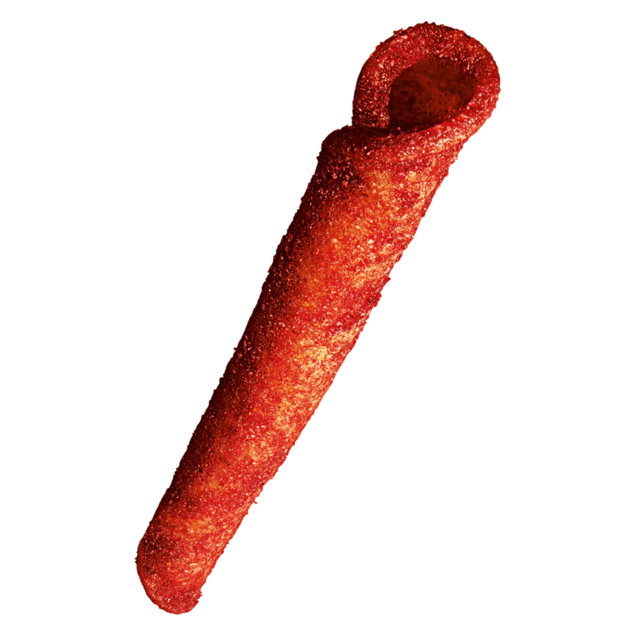

If you look through all my previous entries, you will spot this bag of Trader Joes takis on my desk each time... and the bag gets emptier and emptier...each time... Having lived in Hong Kong for my whole life until August 2024, I had never confronted red dye 40. Until I came to America, where I down a bag of these takis at least once a month. Absolutely no regrets because this may be one of my favourite snacks... If you haven't tried it yet I highly would not recommend, for your sake, you won't be able to stop. ⠀⠀⠀. . ﾟ . . ✦ , . ⠀⠀⠀⠀⠀⠀⠀⠀⠀⠀⠀⠀⠀⠀⠀⠀⠀ * . . . ✦⠀ , * ⠀ ⠀ , ⠀⠀⠀⠀⠀⠀⠀⠀⠀⠀⠀⠀. ⠀ ⠀. ˚ ⠀ ⠀ , . . *⠀ ⠀ ⠀✦⠀ * . . . ⠀ . . . . ˚ ﾟ . .⠀ ⠀⠀⠀⠀⠀⠀⠀⠀⠀⠀⠀, ✦⠀ ˚ ﾟ . .⠀ ⠀⠀⠀⠀⠀⠀⠀⠀⠀⠀⠀, * ⠀. . ⠀✦ ˚ *.⠀ . .